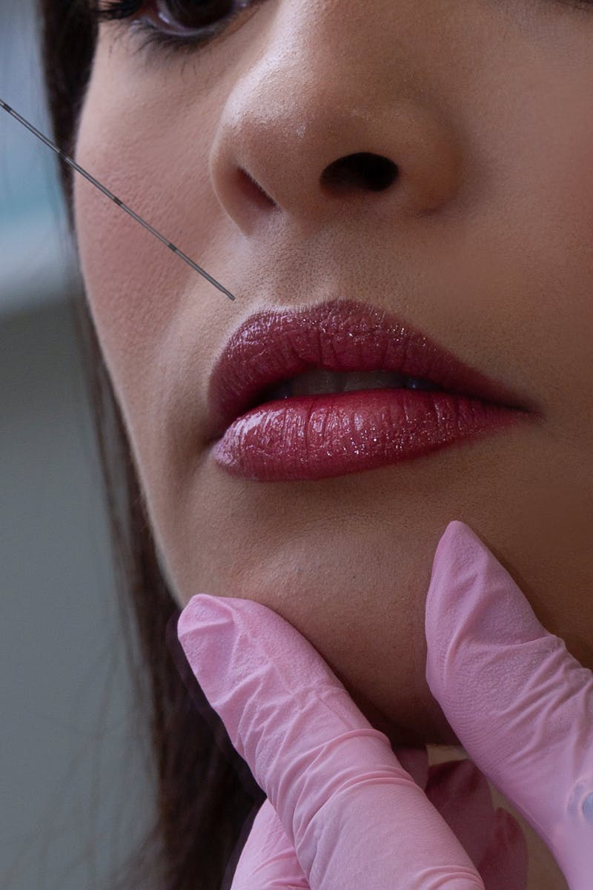

Моделирование черт лица инъекциями гиалуроновых филлеров
Цена
от 6 500 ₽
Длительность
30-60 минут

Контурная пластика -- это инъекционная процедура с использованием филлеров на основе гиалуроновой кислоты. С её помощью можно скорректировать черты лица: увеличить губы, подчеркнуть скулы, заполнить носогубные складки, смоделировать подбородок и восстановить утраченные объёмы.
В нашей клинике используются только сертифицированные филлеры премиум-класса: STYLAGE (Франция), QT FILL (Корея), Revolax (Корея) и Sofiderm (Корея). Каждый препарат имеет разную плотность и подбирается индивидуально в зависимости от зоны коррекции и желаемого эффекта.
Косметолог Надежда проводит тщательную консультацию перед процедурой, определяя оптимальный препарат и объём для естественного, гармоничного результата. Все филлеры содержат лидокаин для комфортного проведения процедуры.
Важно: Результат контурной пластики виден сразу, но окончательный эффект оценивается через 7-14 дней, после спадения отёка.
Филлеры премиум-класса для моделирования контуров лица
Филлер премиум-класса для губ, скул, носогубных складок
Для точечной коррекции и небольших объемов
Корейский филлер для моделирования контуров лица
Для малой коррекции и повторных процедур
Плотный филлер для объемной коррекции
Для деликатной работы с небольшими зонами
Филлер с высокой пластичностью для естественного результата
Идеален для коррекции губ и мелких морщин
Контурная пластика занимает 30-60 минут и проходит комфортно
Косметолог Надежда определяет зоны коррекции, подбирает препарат и объём
Фиксация исходного состояния для отслеживания результата
Нанесение обезболивающего крема на 15-20 минут
Нанесение точек инъекций для точной симметричной коррекции
Введение препарата тонкой иглой или канюлей с моделированием
Инструкции по уходу после процедуры
Контурная пластика поможет при следующих эстетических задачах
Процедура не проводится при наличии следующих состояний
Для наилучшего результата соблюдайте рекомендации
Процедуры, которые дополняют и усиливают результат
Доверьте моделирование вашего лица опытному специалисту. Косметолог Надежда подберёт оптимальный препарат и объём для естественного, гармоничного результата.